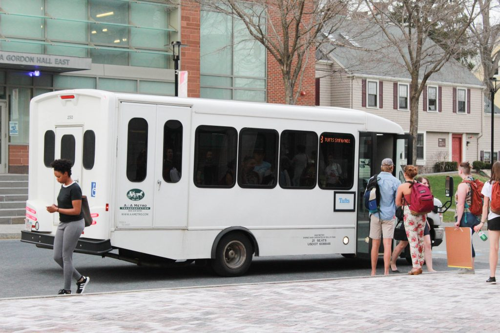

AboutTufts rides is a web app that allows Tufts students to accurately see the location of the shuttle, arrival times, and schedule.
Live tracking on MapThe map shows you the exact location of the shuttle.While the shuttle moves through the campus and Davis, the map is updated in real-time.
Arrival timeBelow the map, there is a list of stops that shows you how long it will take until the shuttle arrives at the stop.This way, instead of looking at the schedule for the next shuttle, you can look right below the map!
Scheduletext |

|